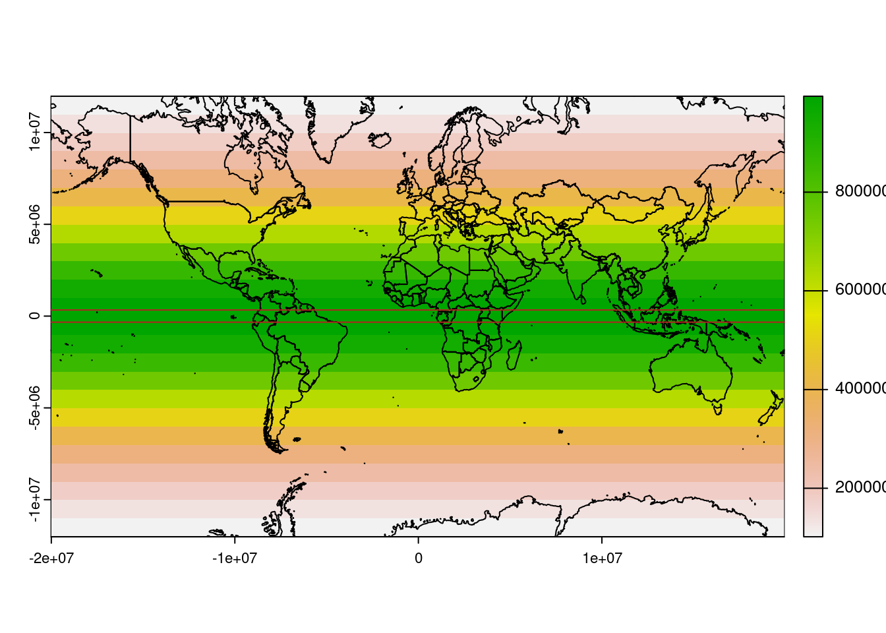
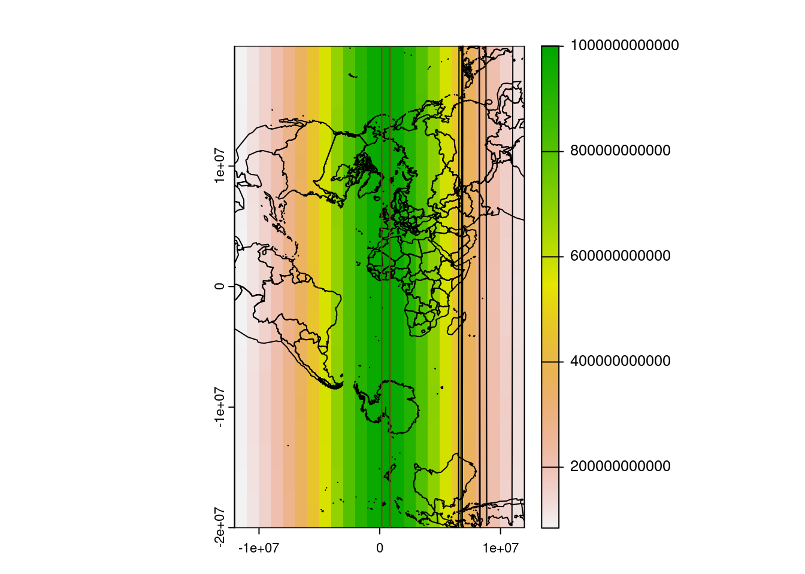
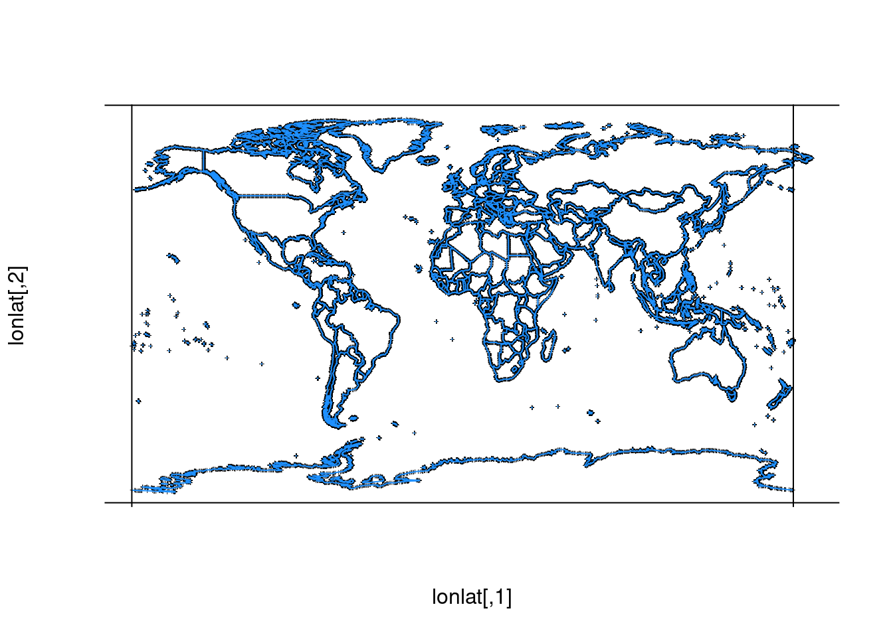

library(raadtools)
files <- icefiles(hemisphere = "south")
dsn <- tail(files$fullname, 1L)
library(terra)
## compare 5e6 to 2e7
runfun <- function(scale = 5e6) {
target <- rast(ext(-1, 1, -1, 1) * scale, res = 25000)
world <- geodata::world(path = tempdir())
op <- par(mfrow = c(2, 2))
## Polar stereographic (central latitude 90S, true scale 71S)
prj <- "EPSG:3031"
set.crs(target, prj)
plot(stere <- project(rast(dsn, lyr = 1), target), main = "stere (conformal)")
plot(project(world, prj), add = TRUE)
## Lambert Azimuthal Equal Area (central latitude 90S)
prj <- "+proj=laea +lat_0=-90"
set.crs(target, prj)
plot(laea <- project(rast(dsn, lyr = 1), target), main = "laea (equal area)")
plot(project(world, prj), add = TRUE)
## Azimuthal Equidistant (central latitude 90S)
prj <- "+proj=aeqd +lat_0=-90"
set.crs(target, prj)
plot(aeqd <- project(rast(dsn, lyr = 1), target), main = "aeqd (equidistant)")
plot(project(world, prj), add = TRUE)
## Gnomonic (central latitude 90S)
prj <- "+proj=gnom +lat_0=-90"
set.crs(target, prj)
plot(gnom <- project(rast(dsn, lyr = 1), target), main = "gnomonic (great circs)")
plot(project(world, prj), add = TRUE)
par(op)
invisible(NULL)
}
runfun()
runfun(2e7)Map Projections and Data
Map projections
Map projections are literally a choice between compromises when mapping the (sphere, ellipsoid, geoid) to the plane, compromises of area, distance, conformality (preservation of angles,shape).
Tools
There are three main types of tools
- reprojecting points from source to target (old mode was project vs *inverse)
- reprojecting vector objects (classed objects store their source, points, multipoints, lines, polygons)
- reproject rasters, normally called warping
Reproject points/vectors to the raster for efficiency. But warping is now so accessible and efficient it is used widely, very useful for standardizing low level data streams, and interactive visualization.
There’s a wider remit of regridding with complex coordinate arrays, but also there are interpretations of rasters that aren’t really curvilinear, and there are storage modes (tabular XYZ) that are problematic for size and fidelity that complicate the conversations.
Many data sets use a projection natively.
Sea ice comes in polar stereographic.
Many polar datasets use Lambert Azimuthal Equal Area
Some complex models are a regular grid in a projection (waom2 ROMS for example), but are delivered with longitude,latitude arrays.
Some complex models are truly curvilinear (i.e. there isn’t an underlying regular grid).
Much tiled imagery and web server raster data is in Mercator, but there are modes for northern and southern polar stereographic.
This is how the old AVISO ocean currents stored in NetCDF would present (this is now Copernicus and delivered well-formed NetCDF).
Reorient the grid, looks right, but map doesn’t line up . . .
PROJ.4 +proj=merc +lon_0=0 +k=1 +x_0=0 +y_0=0 +ellps=WGS84 +over +units=m +no_defs
- Left panel is rectilinear, latitude lines are denser towards the poles.
- Right panel is regular in native projection, and this allows straightforward usage (and fast extraction methods).
Conformal vs equal area.
Other map projections in common use
Spherical Mercator Smith/Sandwell topography-bathymetry +proj=merc +lon_0=0 +k=1 +x_0=0 +y_0=0 +a=6370997 +b=6370997 +units=m +no_defs
WGS84 Mercator AVISO currents, SSH/SSHA, Sokolov/Rintoul front zones +proj=merc +lon_0=0 +k=1 +x_0=0 +y_0=0 +ellps=WGS84 +units=m +no_defs
Equal Area Cylindrical Fraser / Massom fast ice +proj=cea +lon_0=91 +lat_0=-90 +lat_ts=-65 +datum=WGS84 +ellps=WGS84 +towgs84=0,0,0
+proj=cea +ellps=WGS84
Lambert Azimuthal Equal Area CCAMLR management zone shapefiles +proj=laea +lat_0=-90 +lon_0=0 +x_0=0 +y_0=0 +datum=WGS84 +units=m +no_defs +ellps=WGS84 +towgs84=0,0,0
(North Polar) Stereographic NSIDC, SSMI products, North-Hemi Snow Cover Extent +proj=stere +lat_0=90 +lat_ts=70 +lon_0=-45 +k=1 +x_0=0 +y_0=0 +a=6378273 +b=6356889.449 +units=m +no_defs
+proj=stere +lat_0=90 +lon_0=10 +ellps=WGS84
(South Polar) Stereographic on the sphere Arrigo/Dijken primary production
+proj=stere +lat_0=-90 +lon_0=180 +ellps=sphere
Longitude / latitude on WGS84
+proj=longlat +ellps=WGS84 +datum=WGS84 +no_defs +towgs84=0,0,0
Sinusoidal on WGS84 SeaWiFS/MODIS Level 3 binned ocean colour
+proj=sinu +ellps=WGS84] = +proj=sinu +lon_0=0 +x_0=0 +y_0=0 +ellps=WGS84 +units=m +no_defs
Lambert Conformal Conic
+proj=lcc +lon_0=147 +lat_0=-42 +lat_1=-50 +lat_2=-35 +datum=WGS84Compare LAEA with Polar Stereographic etc
Demonstration of the projection concept
3D plots that show various projection concepts.
First prepared here: http://mdsumner.github.io/2016/01/26/Three_Projections.html
Mercator vs UTM (the longitude is the equator)
Different names for UTM, Map Grid of Australia, Gauss Kruger, it’s the Zone that matters - but the general case is a central longitude, and offsets for false easting,northing.
library(terra)terra 1.7.18zone2lon <- function(x) -180 + (x - 1) * 6 + 3
world <- geodata::world(path = tempdir())
ex <- c(-1, 1, -.6, .6) * pi * 6378137
merc <- rast(ext(ex), res = 1e6, crs = "+proj=merc +unit=km")
plot(cellSize(merc))
plot(project(world, crs(merc)), add = T)
abline(h = project(cbind(c(-179, 179), c(-3, 3)), to = "+proj=merc +unit=km", from = "OGC:CRS84")[,2], col = "firebrick")
zone <- 30
utmproj <- sprintf("+proj=utm +zone=%s", zone)
utm <- rast(ext(-.6, .6, -1, 1) * pi * 6378137, res = 1e6, crs = utmproj)
utm <- cellSize(utm)
world <- simplifyGeom(world, .2)
plot(utm)
plot(project(world, crs(utm)), add = T)Warning: Point outside of projection domain (GDAL error 1)
Warning: Point outside of projection domain (GDAL error 1)
Warning: Point outside of projection domain (GDAL error 1)
Warning: Point outside of projection domain (GDAL error 1)
Warning: Point outside of projection domain (GDAL error 1)
Warning: Point outside of projection domain (GDAL error 1)
Warning: Point outside of projection domain (GDAL error 1)
Warning: Point outside of projection domain (GDAL error 1)
Warning: Point outside of projection domain (GDAL error 1)
Warning: Point outside of projection domain (GDAL error 1)
Warning: Point outside of projection domain (GDAL error 1)
Warning: Point outside of projection domain (GDAL error 1)
Warning: Point outside of projection domain (GDAL error 1)
Warning: Point outside of projection domain (GDAL error 1)
Warning: Point outside of projection domain (GDAL error 1)
Warning: Point outside of projection domain (GDAL error 1)
Warning: Point outside of projection domain (GDAL error 1)
Warning: Point outside of projection domain (GDAL error 1)
Warning: Point outside of projection domain (GDAL error 1)Warning: Reprojection failed, err = 2050, further errors will be suppressed on
the transform object. (GDAL error 1)abline(v = project(cbind(c(-3, 3) + zone2lon(zone), 0), to = utmproj, from = "OGC:CRS84")[,1], col = "firebrick")
geo <- geom(world)
xy <- project(cbind(c(-3, 3) + zone2lon(zone), 0), to = utmproj, from = "OGC:CRS84")
utm0 <- crop(utm, ext(c(range(xy[,1]), ex[3:4])))
ex0 <- c(xmin(utm0), xmax(utm0), ymin(utm0), ymax(utm0))
# for (zone in 1:60) {
# utmproj <- sprintf("+proj=utm +zone=%s", zone)
#
# set.crs(utm, utmproj)
# plot(utm)
# # im <- whatarelief::imagery(extent = ex0, dimension = dim(utm0)[2:1] * 20, projection = utmproj)
# #plot(project(world, crs(utm)), add = T)
# points(project(geo[, c("x", "y")], from = "OGC:CRS84", to = utmproj), pch = ".")
# abline(v = project(cbind(c(-3, 3) + zone2lon(zone), 0), to = utmproj, from = "OGC:CRS84")[,1], col = "firebrick")
# #ximage::ximage(im, ex0, add = T)
# # dev.flush()
# # dev.hold()
# # Sys.sleep(0.4)
#
# }Projections
A brief overview here. For more please see the geocompr book.
Projections are used to solve particular measurement problems. These include distance, area, and angle.
- Equal-area - area is simple, we can calculate planar area anywhere
- Equi-distant - less simple, applies along an axis or from one point only
- Conformal - preserves shape, i.e. angles are sensible
No projection is perfect for every situation, and quite often tools will work in geographic coordinates, or raw longitude latitude values using algorithms suited for angular units on a sphere or ellipsoid.
Most projection specification is made by choosing an EPSG code, and if one exists for your region then it’s a good choice. However, sometimes the right EPSG does not exist and it’s simpler to specify a custom projection.
Each +proj= code is a projection family, there are many more than shown here.
Lambert Azimuthal Equal Area
+proj=laea +lon_0=0 +lat_0=-90 +datum=WGS84Polar Stereographic (south)
+proj=stere +lon_0=0 +lat_0=-90 +lat_ts=-70 +datum=WGS84Longitude-Latitude
+proj=longlat +datum=WGS84Lambert Conformal Conic
+proj=lcc +lon_0=147 +lat_0=-42 +lat_1=-50 +lat_2=-35 +datum=WGS84Each of these has in common a central longitude and latitude, and many custom projections can be made using only these parameters.
Other parameters include
- +x_0, +y_0 - false easting (adds an arbitrary offset, usually to avoid negative coordinates)
- +lat_0, +lat_2 - these are for conic projections, the secant latitudes
- +ellps, +no_defs, +over - various datum/ellipsoid specific
- +lat_ts - latitude of true scale projection specific, e.g. Stereographic
- +zone, +south - projection-specific parameters, e.g. for UTM
Functions in R to expand EPSG parameters:
epsg <- 3412 ## south pole stereographic
# 3409 ## south polar equal area
# 3411 ## north polar stereographic (at 45W longitude, and Hughes 1980 ellipsoid)
# 3413 ## north polar stereographic (at 45W longitude, WGS84)
## sf is easier
sf::st_crs(epsg)Mapping in R
library(sp)
library(raster)
library(maps)
library(rgdal)Please note that rgdal will be retired during 2023,
plan transition to sf/stars/terra functions using GDAL and PROJ
at your earliest convenience.
See https://r-spatial.org/r/2022/04/12/evolution.html and https://github.com/r-spatial/evolution
rgdal: version: 1.6-5, (SVN revision 1199)
Geospatial Data Abstraction Library extensions to R successfully loaded
Loaded GDAL runtime: GDAL 3.4.3, released 2022/04/22
Path to GDAL shared files: /usr/share/gdal
GDAL binary built with GEOS: TRUE
Loaded PROJ runtime: Rel. 8.2.0, November 1st, 2021, [PJ_VERSION: 820]
Path to PROJ shared files: /perm_storage/home/mdsumner/.local/share/proj:/usr/share/proj
PROJ CDN enabled: FALSE
Linking to sp version:1.6-0
To mute warnings of possible GDAL/OSR exportToProj4() degradation,
use options("rgdal_show_exportToProj4_warnings"="none") before loading sp or rgdal.
Attaching package: 'rgdal'The following object is masked from 'package:terra':
projectdata("wrld_simpl", package = "maptools")The oldest general mapping tool in R is the maps package. It has a simple whole-world coastline data set for immediate use.
maps::map()
The data underlying this live map is available by capturing the output as an actual object.
If we look carefully at the southern edge and the eastern edge, notice that the coastline for Antarctica does not extend to the south pole, and the Chukotka region of Russia east of 180 longitude is not in the western part of the map.
maps_c <- maps::map(plot = FALSE)
lonlat <- cbind(maps_c$x, maps_c$y)
plot(lonlat, pch = "+", cex = 0.4, axes = FALSE)
lines(lonlat, col = "dodgerblue")
abline(h = c(-90, 90), v = c(-180, 180))